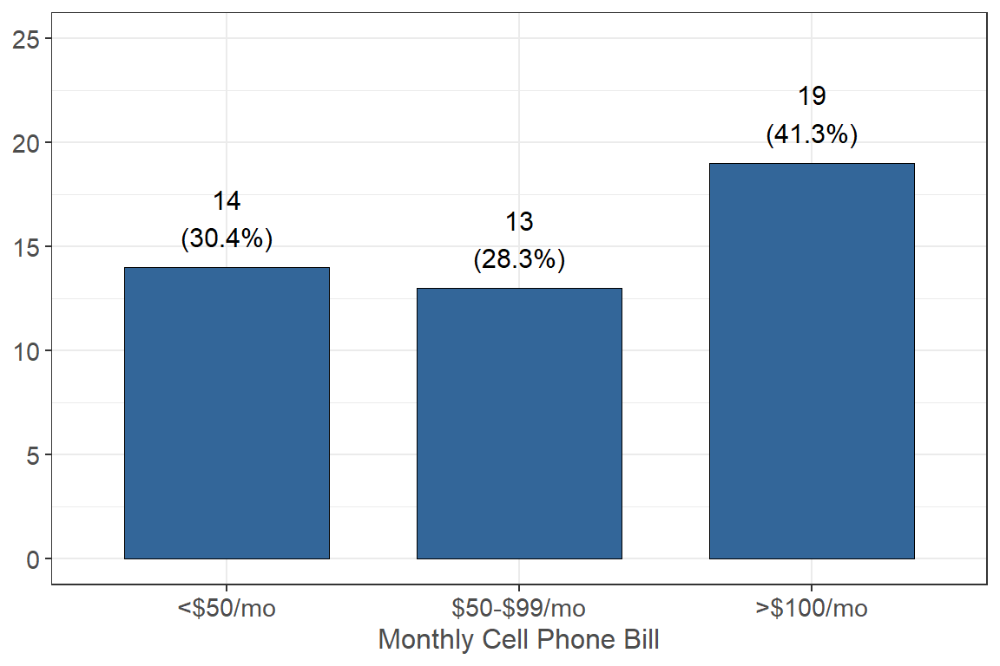

Employment
Supported Employment ⭐
I am approved, awarded, or accepted for work study (with or without a work study job)

88.0% (n = 125) of respondents reported that they are approved, awarded, or accepted for work study, and 12.0% (n = 17) are not.
I participate in CalWorks(i.e. TANF or cash aid for needy families) or Aid to Families with Dependent Children (AFDC)

76.0% (n = 111) of respondents report that they do not participate in Calworks or Aid to Families with Dependent Children, and 24.0% (n = 35) report they do.
I participate in the Job Opportunities and Basic Skills (JOBS) Program

95.2% (n = 138) of respondents report that they do not participate in the Job Opportunities and Basic Skills program and 4.8% (n = 7) report they do.
I participate in the CalFresh Employment or Training (CFET) Program

83.3% (n = 120) of respondents report they do not participate in the CalFresh Employment or Training Program and 16.7% (n = 24) report they do not.
I am enrolled in Workforce Innovation and Opportunity Act (WIOA)

All respondents in this survey (100% n = 147) report that they are not enrolled in Workforce Innovation and Opportunity Act.
I am enrolled in Cooperative Agencies Resources for Education (CARE)

A very small percentage (3.4% n = 5) of respondents are enrolled in Cooperative Agencies Resources for Education with the majority (96.6% n = 143) are not.
I am enrolled in the Mathematics, Engineering, Science achievement (MESA) Program

The majority of respondents (95.3% n = 142) reported that they are not enrolled in the MESA Program while 4.7% (n = 7) report they are.
I am a student attending CSU, receiving Cal Grant A OR B

87.4% (n = 125) of respondents reported that they do receive either Cal Grant A or B while 12.6% (n = 18) reported they do not.
I am enrolled in a program that increases employability for current and former foster youth (Guardian Scholars, FYSI, CAFYES, ETV or Extended Foster Care)

A large proportion (96.6% n = 144) of respondents reported that they are not enrolled in a program that increases employability for current and former foster youth while 3.4% (n = 5) reported that they are.
I exert parental control over a dependent household member between the age of 6 and 12 with no adequate childcare
All respondents (100% n = 147) reported that they do not exert parental control over a dependent household member between the age of 6 and 12 with no adequate childcare.
I am a single parent of a dependent household member under the age of 12

Only 1 (0.7%) person reported that they are a single parent of a dependent household member under the age of 12 while the rest (99.3% n = 148) reported they are not.
Which best describes your current housing situation?
| Housing Situation | n | % |
|---|---|---|
| I am temporarily living with friends or relatives, without permanent housing (couch surfing) | 2 | 1.33 |
| I live in a sorority or fraternity house | 1 | 0.67 |
| I live in a/the university housing or residence halls | 7 | 4.67 |
| I live with parents or other relatives, not paying rent with my own money | 11 | 7.33 |
| I live with parents or other relatives, paying rent with my own money | 4 | 2.67 |
| I own my own home | 2 | 1.33 |
| I rent an apartment or house with roommates | 107 | 71.33 |
| I rent an apartment or house without roommates | 16 | 10.67 |
Employment ⭐
Paid Job or Paid Internship

The majority of the students in this survey (n = 51 34.2%) reported that they work 0 paid hours a week, roughly 20% (n = 29) reported they work 6-10 paid hours a week and only 4.7% (n = 7) work 1-5 paid hours a week.
Unpaid Position or Volunteer
For example, research with faculty on campus, shadowing a professional or volunteering at a shelter.

The majority of respondents (n = 87 58.4%) reported that they work 0 unpaid hours a week, 19.5% (n = 29) work 1-5 unpaid hours, and lastly 12.1% (n = 18) reported they work 21 unpaid hours a week.
If you are currently in a PAID position, what is your average hourly wage from all jobsworked during the academic year?

35.8% (n = 53) of the respondents reported that they make between $12.00 and $12.99/hr and 35.8% (n = 53) reported they are currently not working, while only a total of 6 people reported they make over $14.00 an hour.
For this survey, household size is determined by the number of people you purchase and prepare food with. This may or may not include your roommate(s). How many people are in your household who purchase and prepare food with you?
63.5% (n = 94) reported that they have 1 other person that they purchase and prepare food with while 16.2% (n = 24) reported that they have 2 other people they purchase and prepare food with. Only 6.8% (n = 10) reported that they have 5 or more other people they purchase and prepare food with.
How much is your household’s gross monthly income (before taxes and not including financial aid)?

Before attending college, did you expect to find or want to find a PAID job or PAID internship during the academic year to help cover your college expenses and personal expenses while in college?

The majority of students (n = 112 83.0%) reported that they did expect to find a paid job during the academic year to help support their expenses while 17.0% (n = 23) did not.
If you expected or wanted to find a paid job or paid internship, were you successful in securing a position that paid enough to cover your expenses?

34.3% (n = 48) of students reported that they were not able to find a paid position that meets their expenses and 32.1% (n = 45) reported they were sometimes able to find a paid position. 24.3% (n = 34) of students reported that they were able to find a job that almost always has been able to meet their expenses.
If you have not found paid jobs or internships that have consistently covered your expenses while in college, how strongly do you agree or disagree with these statements?
I was offered jobs, but did not have transportation to a job or available jobs were not within walking/bike riding/bus distance of my residence or campus.

33.6% (n = 37) of respondents reported that they disagree with the statement that they were not able to work because they had no transportation and 17.3% (n = 19) agreed with the statement.
I searched and applied for jobs but was not offered a job.

31.8% (n = 35) of respondents agreed that they searched for a job but was never offered a job and 16.4% (n = 18) reported they disagree with the statement.
I searched for jobs, but my class schedule or study time was not compatible with any jobs that were offered to me.

42.7% (n = 47) of respondents agreed that their class or study schedule conflicted with the work hours so were not able to work and 15.4% (n = 17) reported that they disagree with the statement.
I searched for jobs, but family obligations interfered with any jobs offered to me.

36.4% (n = 40) of respondents disagreed that their family obligations interfered with any jobs offered to them and 10.9% (n = 12) agreed with the statement.
I expected to find a job, but never searched for a job because my school work (studying) did not allow time for a job.

25.4% (n = 28) disagreed that they expected to find a job, but never searched for one because their school work did not allow time and 23.6% (n = 26) agreed with the statement. 20.0% (n = 22) neither agreed nor disagreed with the statement.
I expected to find a job, but never searched for a job, due to other unexpected obligations or conflicts that did not allow time for a job.

33.6% (n = 37) disagreed that they expected to find a job, but due to other unexpected obligations, they did not find a job and 12.7% (n = 14) agreed with the statement. 25.4% (n = 28) neither agreed nor disagreed with the statement.
I did not expect to or want to find a job while in college.

Do you receive Supplemental Security Income (SSI)* in California?

The majority of respondents (96.3% n = 131) reported that they do not receive Supplemental Security Income in California and 3.7% (n = 5) reported they do.
Does anyone in your household get more than half (11 or more) of their meals per week from another source (e.g. university meal plan)?

The majority of respondents (97.0% n = 129) reported that they do not have any people in their household that have more than half of their meals from another souce and 3.0% (n = 4) reported they do.
Time Related Expenses ⭐
Please estimate the monthly housing/rent/mortgage bill (garbage may or may not be included) that you pay for with your own money.

43.5% (n = 64) of respondents reported that they pay $100-$500 a month in housing/rent with their own money and 35.4% (n = 52) reported that they pay $500-$1,000 a month. Only 7.5% (n = 11) reported that they pay $0 because someone else pays.
If someone else pays for you, how much do they pay each month?

Out of the respondents who said they have others pay for their monthly rent/housing, 44.4% (n = 4) reported that they pay $500-$1000 and 33.3% (n = 3) pay $1000-$1500.
Please estimate the monthly utility (i.e. gas, electric, water, and garbage) bills that you pay for with your own money.

51.0% (n = 74) of respondents reported that they pay $50-$99 a month for their utility bill, 20.7% (n = 30) reported that they pay less than $50 a month, and only 9.7% (n = 14) reported that they pay $0 because someone else pays.
If someone else pays for you, how much do they pay each month?

Out of people who have someone else pay for their monthly utility bill, 50% (n = 6) reported that they pay $100+ a month and 33.3% (n = 4) reported they pay $50-$99 a month, and 16.7% (n = 2) reported they pay less than $50 a month.
Please estimate your monthly internet, cable tv/satellite, and streaming service bills that you pay for with your own money.

59.0% (n = 85) of respondents reported that they pay less than $50 a month for their ### If someone else pays for you, how much do they pay each month?

Please estimate the monthly mobile/cell phone or landline phone bills that you pay for with your own money.

If someone else pays for you, how much do they pay each month?
Please estimate the monthly medical expenses (including insurance premiums, co-pays, deductibles, medications, etc.) that you pay for with your own money.

What type of health insurance do you currently have?

Please estimate the monthly transportation bills that you pay for with your own money

Please estimate your monthly expenses for any other regularly occurring expenses such as credit cardpayments, gym membership, child care expenses, etc. that you pay for with your own money.

Please estimate your semester expenses for school supplies, textbooks, school related printing expenses, etc., that you pay for with your own money.

Please estimate the weekly expenses for food and non-alcoholic beverages that you pay for with your own money.
## [1] "<$10/wk"
## [2] "$10-$49/wk"
## [3] "$50-$99/wk"
## [4] "$100-$149/wk"
## [5] "$150-$200/wk"
## [6] "$200+/wk"
## [7] "0"
## [8] "I don’t have any other food expenses because I have a meal plan."
Please estimate the weekly expenses for alcoholic beverages that you pay for with your own money. Include all weekly beverage expenses from house parties, bars, liquor stores, etc.